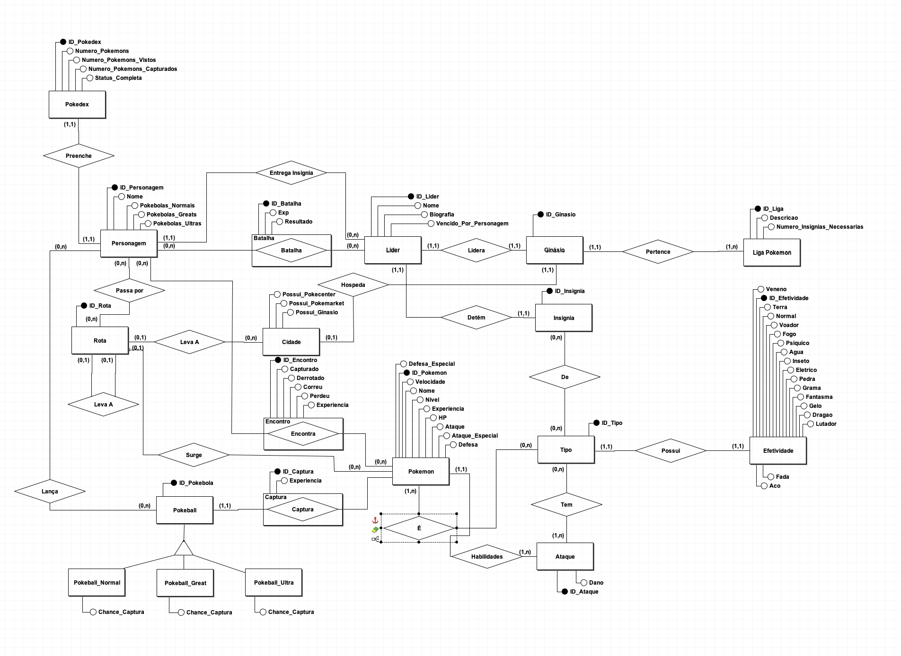

Descrição do Artefato DER - Terceira Versão
DER:

Principais Alterações
- Melhor organização do Diagrama e geral
- Substituicao de algumas entidades para melhorar a regra de negocio do jogo.
- Remoção de algumas entidades que nao se adequaram ao contexto (Evento, Regiao, Caminho)
- Organizar e revisar Cardinalidades.
Entidades e Atributos
-
Efetividade
- ID_Efetividade
- Veneno
- Terra
- Normal
- Voador
- Fogo
- Psiquico
- Agua
- Inseto
- Eletrico
- Pedra
- Grama
- Fantasma
- Gelo
- Dragao
- Lutador
- Fada
- Aco
-
Pokedex
- ID_Pokedex
- Numero_Pokemons
- Numero_Pokemons_Vistos
- Numero_Pokemons_Capturados
- Status_Completa
-
Personagem
- ID_Personagem
- Nome
- Pokebolas_Normais
- Pokebolas_Greats
- Pokebolas_Ultras
-
Rota
- ID_Rota
-
Pokebola
- ID_Pokebola
-
Pokeball_Normal
- Chance_Captura
-
Pokeball_Great
- Chance_Captura
-
Pokeball_Ultra
- Chance_Captura
-
Batalha
- ID_Batalha
- Exp
- Resultado
-
Lider
- ID_Lider
- Nome
- Biografia
- Vendido_Por_Personagem
-
Ginasio
- ID_Ginasio
-
Insignia
- ID_Insignia
-
Liga Pokemon
- ID_Liga
- Descricao
- Numero_Insignias_Necessarias
-
Cidade
- ID_Cidade
- Possui_Pokecenter
- Possui_Pokemarket
- Possui_Ginasio
-
Encontro
- ID_Encontro
- Capturado
- Derrotado
- Correu
- Perdeu
- Experiencia
-
Captura
- ID_Captura
- Experiencia
-
Pokemon
- ID_Pokemon
- Defesa_Especial
- Nome
- Velocidade
- HP
- Nivel
- Experiencia
- Ataque_Especial
- Defesa
-
Tipo
- ID_Tipo
- Eficiencia
-
Ataque
- ID_Ataque
- Dano